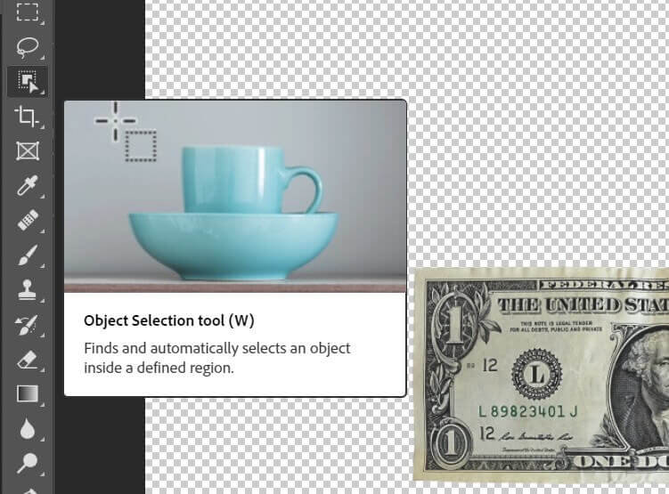
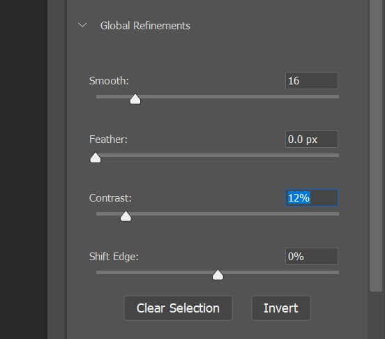
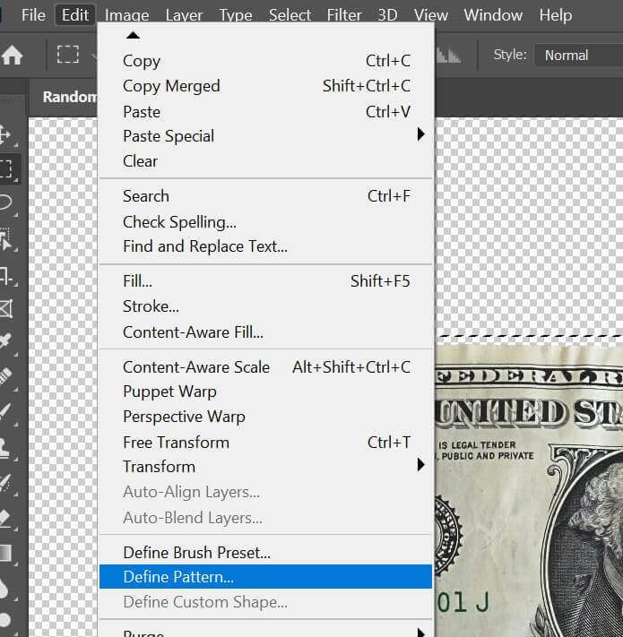
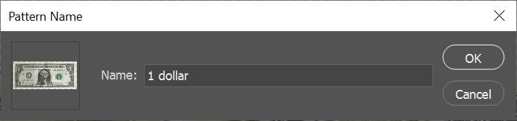
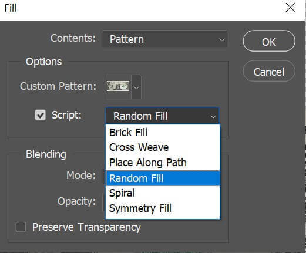
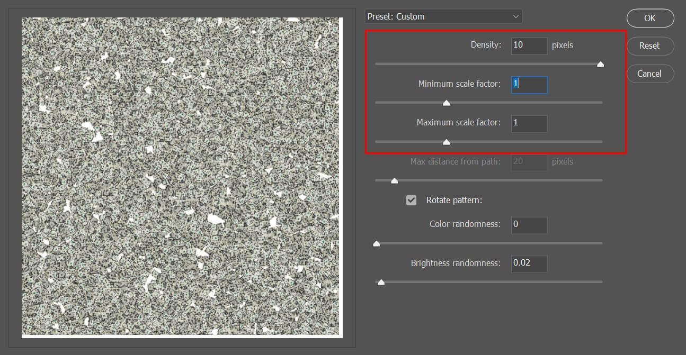
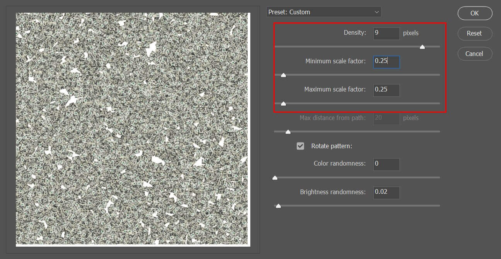
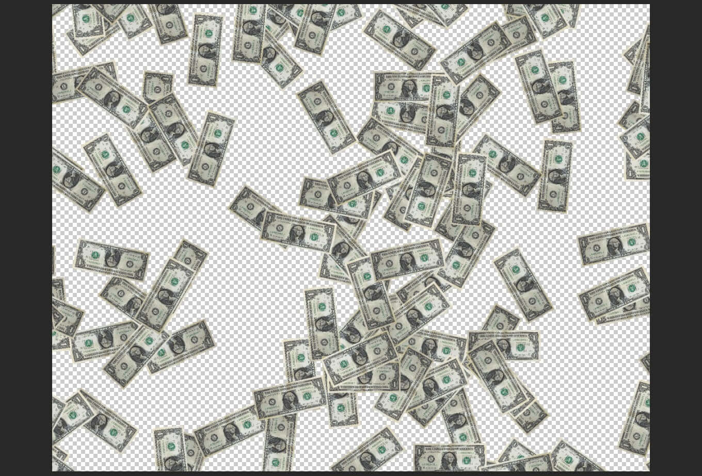
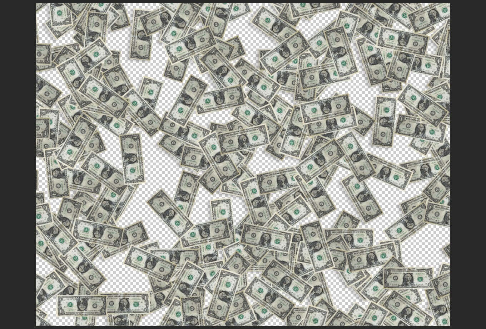

这篇文章上次修改于 1170 天前，可能其部分内容已经发生变化，如有疑问可询问作者。

对于单个 pattern 模型，如果想要在 layer 内以随机的角度或大小填充来实现更加自然的效果可以使用 script 脚本方便的实现。
我们从如何定一个 pattern 开始，下面是一张 1 美元图片：
使用 object selection tool 快速将主体选出来：

选区边沿如果有多余的或者缺失的部分，通过 按住 shift 和 alt 键来增加/减去选区：
点击添加图层蒙版，边沿如果需要调整，可以使用画笔工具来进一步修整蒙版。如果蒙版边沿有锯齿，可以双击蒙版打开属性框，调整 smooth 和 contract 来优化蒙版：

使用选区工具框出一个矩形框包含我们的主体：
选择 edit - define pattern：

定义一个名称，点击 ok：

新建图层，快捷键 shift backspace/shift delete 调出填充框：
content 选择 pattern：
custom pattern 里选中我们刚才新建的模型：
script 前打勾，然后右侧菜单里选择 random fill：

点击 ok 后进入调整菜单，首先将 下面的 color randomness 设为 0 避免图形的染色改变，brightness randomness 设置为 0.02 左右使亮度轻微可以随机改变，形成层次感：
将 density 设置为最大 10，将 minimum/maximum scale factor 设置为 1，这样 pattern 会以 1:1 比例显示：

将 rotate pattern 打勾，这样模型会随机旋转：
设置完成后点击 ok，可以看到效果：
还可以做一些优化来使层叠效果更加真实，过程就是降低 density 和 scale，添加图层阴影效果。
新建图层，使用上面的方法填充 pattern，在设置中将 density 设置为 9，scale 设置为 0.25：

确认后可以看到效果，单个图形变小，填充密度变小：

我们给图层添加阴影效果，双击图层打开 layer style，下方点击添加阴影：
再次新建图层，使用上面图层的填充设置填充 pattern，可以将空缺的部分进一步补充完整：

按住 alt 键拖拽刚才的阴影特效到新图层，可以快速复制效果：
可以看到还是有空白的区域没有填充完整，继续重复上面的步骤，建立多个图层，直到完全充满整个区域为止，最终效果如下：
以上就是使用 script 来实现 pattern 自由填充的过程。
没有评论